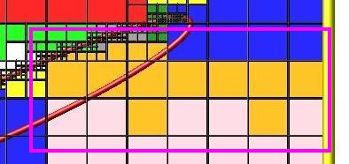

global command¶
Syntax:¶
global keyword values ...
one or more keyword/value pairs
keyword = *fnum* or *nrho* or *vstream* or *temp* or *gravity* or
*surfs* or *surfgrid* or *surfmax* or *cellmax* or *splitmax* or
*surftally* or *surfpush* or *gridcut* or *comm/sort* or *comm/style*
or *weight* or *particle/reorder* or *mem/limit*
fnum value = ratio
ratio = Fnum ratio of physical particles to simulation particles
nrho value = density
density = number density of background gas (# per length^3 units)
vstream values = Vx Vy Vz
Vx,Vy,Vz = streaming velocity of background gas (velocity units)
temp values = thermal
thermal = temperature of background gas (temperature units)
gravity values = mag ex ey ez
mag = magnitude of acceleration due to gravity (acceleration units)
ex,ey,ez = direction vector that gravity acts in
surfs value = explicit or explicit/distributed or implicit
explicit = surfs defined in read_surf file, each proc owns copy of all surfs
explicit/distributed = surfs defined in read_surf file, each proc owns only the surfs for its owned_ghost grid cells
implicit = surfs defined in read_isurf file, each proc owns only the surfs for its owned+ghost grid cells surfgrid value = percell or persurf or auto
percell = loop over my cells and check every surf
persurf = loop over my surfs and cells they overlap
auto = choose percell or persurf based on surface element and proc count
surfmax value = Nsurf
Nsurf = max # of surface elements allowed in single grid cell
cellmax value = Ncell
Ncell = max # of grid cells a single surf can overlap
splitmax value = Nsplit
Nsplit = max # of sub-cells one grid cell can be split into by surface elements
surftally value = reduce or rvous or auto
reduce = tally surf collision info via MPI_Allreduce operations
rvous = tally via a rendezvous algorithm
auto = choose reduce or rvous based on surface element and proc count
surfpush value(s) = no/yes or slo shi svalue
no = do not push surface element points near cell surface
yes = push surface element points near cell surface if necessary
slo,shi = push points within this range
svalue = push points to this value
gridcut value = cutoff
cutoff = acquire ghost cells up to this far away (distance units)
comm/sort value = yes or no
yes/no = sort incoming messages by proc ID if yes, else no sort
comm/style value = neigh or all
neigh = setup particle comm with subset of near-neighbor processor
all = allow particle comm with potentially any processor
weight value = wstyle mode
wstyle = cell
mode = none or volume or radius
particle/reorder value = nsteps
nsteps = reorder the particles every this many timesteps
mem/limit value = grid or bytes
grid = limit extra memory for load-balancing, particle reordering, and restart file read/write to grid cell memory
bytes = limit extra particle memory to this amount (in MBytes)
Examples:¶
global fnum 1.0e20
global vstream 100.0 0 0 fnum 5.0e18
global temp 1000
global weight cell radius
global mem/limit 100
Description:¶
Define global properties of the system.
- The fnum keyword
sets the ratio of real, physical molecules to simulation particles. E.g. a value of 1.0e20 means that one particle in the simulation represents 1.0e20 molecules of the particle species.
- The nrho keyword
sets the number density of the background gas. For 3d simulations the units are #/volume. For 2d, the units are effectively #/area since the z dimension is treated as having a length of 1.0.
Assuming your simulation is populated by particles from the background gas, the fnum and nrho settings can determine how many particles will be present in your simulation, when using the create_particles or fix emit command variants.
- The vstream keyword
sets the streaming velocity of the background gas.
- The temp keyword
sets the thermal temperature of the background gas. This is a Gaussian velocity distribution superposed on top of the streaming velocity.
- The gravity keyword
sets an acceleration term which is included in the motion of particles. The magnitude of gravity is set by the mag keyword. Its direction of action is set as (ex,ex,ez). The direction does not have to be a unit vector. If the magnitude is set to 0.0, no acceleration term is included, which is the default.
- The surfs keyword
determines what kind of surface elements SPARTA uses and how they are distributed across processors. Possible values are explicit, explicit/distributed, and implicit.
See the Howto 6.13 section of the manual for an explantion of explicit versus implicit surfaces. The distributed option can be important for models with huge numbers of surface elements. Each processor stores copies of only the surfaces that overlap grid cells it owns or has ghost copies of. Implicit surfaces are always distributed.
The explicit setting is the default and means each processor stores a copy of all the defined surface elements. Note that a surface element requires about 100 bytes of storage, so storing a million on a single processor requires about 100 MBytes.
- The surfgrid keyword
determines what algorithm is used to enumerate the overlaps (intersections) between grid cells and surface elements (lines in 2d, triangles in 3d).
The possible settings are percell, persurf, and auto. The auto setting is the default and will choose between a percell or persurf algorithm based on the number of surface elements and processor count. If there are more processors than surface elements, the percell algorithm is used. Otherwise the persurf algorithm is used. The percell algorithm loops over the subset of grid cells each processor owns. All the surface elements are tested for overlap with each owned grid cell. The persurf algorithm loops over a 1/P fraction of surface elements on each processor. The bounding box around each surface is used to find all grid cells it possibly overlaps. For large numbers of surface elements or processors, the persurf algorithm is generally faster.
- The surfmax keyword
determines the maximum number of surface elements (lines in 2d, triangles in 3d) that can overlap a single grid cell. The default is 100, which should be large enough for any simulation, unless you define very coarse grid cells relative to the size of surface elements they contain.
- The cellmax keyword
determines the maximum number of grid cells that a single surface element (lines in 2d, tringles in 3d) can overlap. This keyword is only used if the persurf algorithm defined by the surfgrid keyword is invoked. The default is 100, which should be large enough for most simulations, unless you define one or more very large surface elements relative to the size of grid cells they intersect.
- The splitmax keyword
determines the maximum number of sub-cells a single grid cell can be split into as a result of its intersection with multiple surface elements (lines in 2d, triangles in 3d). The default is 10, which should be large enough for any simulation, unless you embed a complex-shaped surface object into one or a very few grid cells.
- The surftally keyword
determines what algorithm is used to combine tallies of surface collisions across processors that own portions of the same surface element. The possible settings are reduce, rvous, and auto. The auto setting is the default and will choose between a reduce or rvous algorithm based on the number of surface elements and processor count. If there are more processors than surface elements, the reduce algorithm is used. Otherwise the rvous algorithm is used. The reduce algorithm is suitable for relatively small surface elememt counts. It creates a copy of a vector or array of length the global number of surface elements. Each processor sums its tally contributions into the vector or array. An MPI_Allreduce() is performed to sum it across all processors. Each processor than extracts values for the N/P surfaces it owns. The rvous algorithm is faster for large surface element counts. A rendezvous style of communication is performed where every processor sends its tally contributions directly to the processor which owns the element as one of its N/P elements.
- The surfpush keyword
is only useful to use when SPARTA is having problems embedding a surface in the simulation grid, which occurs when when surface elements are defined via the read_surf command. Or for debugging purposes.
In rare cases, if a surface element point is just slightly inside or outside a grid cell, but within an epsilon distance from the surface of the grid cell, a numerical round-off error can occur when computing the cut volume. The error can be avoided if such points are shifted (pushed) to a slightly different location, which only induces a tiny change in the computed cut volume. By default the surfpush keyword is set to yes, which will perform this “push” operation on a grid cell if the numerical issue is flagged. SPARTA prints out how many grid cells needed this push operation.
If you set surfpush to no, then the push operation is not performed, which will result in an error if the numerical issue occurs.
If the default surfpush yes still gives an error, then setting the slo, shi, and svalue allows experimentation with a different mode of pushing.
These 3 values are all multipliers on an epsilon of 1.0e-6 which is set internally in the code. Epsilon refers to a fraction of the size of a grid cell in each of its dimensions. Negative values for any of the 3 values distances inside a grid cell (inward from the cell face). Positive values are distances outside a grid cell (outward from the cell face). Zero values are exactly on the cell face. If any surface point (end points of 2d lines, corner points of 3d triangles) is between a slo to shi distance from any of the cell faces, then it is pushed to be a distance svalue from the face.
When surfpush is set to yes, SPARTA tries 2 kinds of pushing first, if the numerical issue is encountered for a grid cell. The first is slo = -1, shi = 1, svalue = 1, which means any point within a fractional distance (in each dimension) of 1.0e-6 inside the cell to 1.0e-6 outside the cell, is shifted to be a distance 1.0e-6 outside the cell. The second try is with slo = -1, shi = 1, svalue = 0, which puts the point on the face. If you set slo, shi, svalue explicitly, it will be the third option tried.
If you cannot get a surface to embed properly in a grid, meaning you get errors with the default setting of surfpush yes, then please contact the SPARTA developers. We will want to figure out what is unusual about your surface file!
- The gridcut keyword
determines the cutoff distance at which ghost grid cells will be stored by each processor. Assuming the processor owns a compact clump of grid cells (see below), it will also store ghost cell information from nearby grid cells, up to this distance away. If the setting is -1.0 (the default) then each processor owns a copy of ghost cells for all grid cells in the simulation. This can require too much memory for large models. If the cutoff is 0.0, processors own a minimal number of ghost cells. This saves memory but may require multiple passes of communication each timestep to move all the particles and migrate them to new owning processors. Typically a cutoff the size of 2-3 grid cell diameters is a good compromise that requires only modest memory to store ghost cells and allows all particle moves to complete in only one pass of communication.
An example of the gridcut cutoff applied to a clumped assignment is shown in this zoom-in of a 2d hierarchical grid with 5 levels, refined around a tilted ellipsoidal surface object (outlined in pink). One processor owns the grid cells colored orange. A bounding rectangle around the orange cells, extended by a short cutoff distance, is drawn as a purple rectangle. The rectangle contains only a few ghost grid cells owned by other processors.

Important
Using the gridcut keyword with a cutoff >= 0.0 is only allowed if the grid cells owned by each processor are “clumped”. If each processor’s grid cells are “dispersed”, then ghost cells cannot be created with a gridcut cutoff >= 0.0. Whenever ghost cells are generated, a warning to this effect will be triggered. At a later point when surfaces are read in or a simulation is performed, an error will result. The solution is to use the balance_grid command to change to a clumped grid cell assignment. See Section 6.8 of the manual for an explanation of clumped and dispersed grid cell assignments and their relative performance trade-offs.
Important
If grid cells have already been defined via the create_grid, read_grid, or read_restart commands, when the gridcut cutoff is specified, then any ghost cell information that is currently stored will be erased. As discussed in the preceeding paragraph, a balance_grid command must then be invoked to regenerate ghost cell information. If this is not done before surfaces are read in or a simulation is performed, an error will result.
- The comm/sort keyword
determines whether the messages a proc receives for migrating particles (every step) and ghost grid cells (at setup and after re-balance) are sorted by processor ID. Doing this requires a bit of overhead, but can make it easier to debug in parallel, because simulations should be reproducible when run on the same number of processors. Without sorting, messages may arrive in a randomized order, which means lists of particles and grid cells end up in a different order leading to statistical differences between runs.
- The comm/style keyword
determines the style of particle communication that is performed to migrate particles every step. The most efficient method is typically for each processor to exchange messages with only the processors it has ghost cells for, which is the method used by the neigh setting. The all setting performs a relatively cheap, but global communication operation to determine the exact set of neighbors that need to be communicated with at each step.
For small processor counts there is typically little difference. On large processor counts the neigh setting can be significantly faster. However, if the flow is streaming in one dominant direction, there may be no particle migration needed to upwind processors, so the all method can generate smaller counts of neighboring processors.
Note that the neigh style only has an effect (at run time) when the grid is decomposed by the RCB option of the balance or fix balance commands. If that is not the case, SPARTA performs the particle communication as if the all setting were in place.
- The weight keyword
determines whether particle weighting is used. Currently the only style allowed, as specified by wstyle = cell, is per-cell weighting. This is a mechanism for inducing every grid cell to contain roughly the same number of particles (even if cells are of varying size), so as to minimize the total number of particles used in a simulation while preserving accurate time and spatial averages of flow quantities. The cell weights also affect how many particles per cell are created by the create_particles and fix emit command variants.
If the mode is set to none, per-cell weighting is turned off if it was previously enabled. For mode = volume or radius, per-cell weighting is enabled, which triggers two computations. First, at the time this command is issued, each grid cell is assigned a “weight” which is calculated based either on the cell volume or radius, as specified by the mode setting.
For the volume setting, the weight of a cell is its 3d volume for a 3d model, and the weight is its 2d area for a 2d model. For an axi-symmetric model, the weight is the 3d volume of the 2d axi-symmetric cell, i.e. the volume the area sweeps out when rotated around the y=0 axis of symmetry. The radius setting is only allowed for axisymmetric systems. The weight in this case is the distance the cell’s midpoint is from the y=0 axis of symmetry. See Section 6.2 for more details on axi-symmetric models.
Second, when a particle moves from an initial cell to a final cell, the initial/final ratio of the two cell weights is calculated. If the ratio > 1, then additional particles may be created in the final cell, by cloning the attributes of the incoming particle. E.g. if the ratio = 3.4, then two extra particle are created, and a 3rd is created with probability 0.4. If the ratio < 1, then the incoming particle may be deleted. E.g. if the ratio is 0.7, then the incoming particle is deleted with probability 0.3.
Note that the first calculation of weights is performed whenever the global weight command is issued. If particles already exist, they are not cloned or destroyed by the new weights. The second calculation only happens when a simulation is run.
- The particle/reorder keyword
determines how often the list of particles on each processor is reordered to store particles in the same grid cell contiguously in memory. This operation is performed every nsteps as specified. A value of 0 means no reordering is ever done. This option is only available when using the KOKKOS package and can improve performance on certain hardware such as GPUs, but is typically slower on CPUs except when running on thousands of nodes.
- The mem/limit keyword
limits the amount of memory allocated for several operations: load balancing, reordering of particles, and restart file read/write. This should only be necessary for very large simulations where the memory footprint for particles and grid cells is a significant fraction of available memory. In this case, these operations can trigger a memory error due to the additional memory they require. Setting a limit on the memory size will perform these operations more incrementally so that memory errors do not occur.
A load-balance operation can use as much as 3x more memory than the memory used to store particles (reported by SPARTA when a simulation begins). Particle reordering temporarily doubles the memory needed to store particles because it is performed out-of-place by default. Reading and writing restart files also requires temporary buffers to hold grid cells and particles and can double the memory required.
Specifying the value for mem/limit as grid, will allocate extra memory limited to the size of memory for storing grid cells on each processor. For most simulations this is typically much smaller than the memory used to store particles. Specifying a numeric value for bytes will allocate extra memory limited to that many MBytes on each processor. Bytes can be specified as a floating point value or an integer, e.g. 0.5 if you want to use 1/2 MByte of extra memory or 100 for a 100 MByte buffer. Specifying a value of 0 (the default) means no limit is used. The value used for mem/limit must not exceed 2GB or an error will occur.
For load-balancing, the communication of grid and particle data to new processors will then be performed in multiple passes (if necessary) so that only a portion of grid cells and their particles which fit into the extra memory are migrated in each pass. Similarly for particle reordering, multiple passes are performed using the extra memory to reorder the particles nearly in-place. For reading/writing restart files, multiple passes are used to read from or write to the restart file as well. For reading restart files, this option is ignored unless reading from multiple files (i.e. a “%” character was used in the command to write out the restart) and the number of MPI ranks is greater than the number of files.
Note that for these operations if the extra memory is too small, performance will suffer due to the large number of multiple passes required.
Restrictions:¶
The global surfmax command must be used before surface elements are defined, e.g. via the read_surf command.
Default:¶
The keyword defaults are
fnum = 1.0
nrho = 1.0
vstream = 0.0 0.0 0.0
temp = 273.15
gravity = 0.0 0.0 0.0 0.0
surfs = explicit
surfgrid = auto
surfmax = 100
cellmax = 100
splitmax = 10
surftally = auto
surfpush = yes
gridcut = -1.0
comm/sort = no
comm/style = neigh
weight = cell none
particle/reorder = 0
mem/limit = 0.